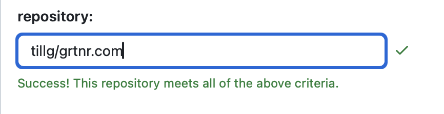

Solid Comments In Static Website
TL;DR: Ich habe Kommentare zu meiner statischen Website hinzugefügt. So habe ich es gemacht - einschließlich einiger technischer Details. Ich habe verschiedene mögliche Lösungen recherchiert, um die solideste zu finden, sie für alle Beiträge integriert und einen Zähler für die Anzahl der Kommentare auf der Beitragsübersichtsseite hinzugefügt.
2025-05-23 Update Da ich von Jekyll zu Pelican gewechselt bin, habe ich einige Details aktualisiert.
Auswahl einer Lösung
Da ich vorhatte, mit dem neuen Deep Research Model von OpenAI zu experimentieren, habe ich es zu diesem Thema ausprobiert: lesen Sie hier gerne weiter. Insgesamt war die Recherche hilfreich und ich habe mich letztendlich für Giscus für die Kommentare entschieden. Teilweise, weil es sich am robustesten und zuverlässigsten anfühlte, teilweise, weil ich vor einigen Jahren wirklich schlechte Erfahrungen mit Disqus gemacht habe.
Die Wahl basierte auf den Kriterien, die ich dem Modell gegeben habe. Hier sind die wichtigsten:
- Kein selbst gehosteter Server – Ich möchte keinen Server verwalten (und bezahlen 😉).
- Datenportabilität – die Kommentare können exportiert werden.
- Datenschutzfreundlich – keine zusätzlichen Tracker oder Anzeigen über das hinaus, was ich bereits verwende (z.B. Google Analytics).
- Markdown-Unterstützung – ermöglicht reichhaltige Formatierung (Codeblöcke usw.), geeignet für technische Diskussionen.
- Spam-Schutz – verfügt über Maßnahmen zur Reduzierung von Spam, insbesondere wenn anonyme oder nicht authentifizierte Kommentare erlaubt sind.
Die Werkzeuge, die Deep Research analysiert hat, waren:
- Giscus
- Utterances
- Staticman
- Commento
- Hyvor Talk
- Disqus
- Einige selbstgemachte Lösungen
Integration von Giscus
Im Anschluss an die Recherche bat ich das Modell, mir eine Schritt-für-Schritt-Anleitung zur Integration der Lösung zu geben. Dies war weit weniger zuverlässig als die erste Recherche, aber dennoch hilfreich.
Hier ist die Zusammenfassung (die Details finden Sie im Chat, den ich mit der KI hatte):
- Schritt 1: GitHub Discussions für Ihr Repository aktivieren. Das bedeutet das Repo, in das die statische Seite generiert wird (was manchmal nicht dasselbe ist wie die Quelle).
- Gehen Sie zu Ihrem GitHub-Repository
- Navigieren Sie zu Einstellungen > Allgemein.
- Scrollen Sie nach unten zum Abschnitt Discussions und aktivieren Sie ihn.
- Zwischenschritt, den die KI nicht erwähnt hat: Installieren Sie Giscus für alle oder einige Ihrer Repos. Hier

- Schritt 2: Installieren und konfigurieren Sie Giscus
- Besuchen Sie die Giscus-Setup-Seite: https://giscus.app/.
- Unter "Repository" geben Sie Ihren Repo-Namen ein. Sie sollten jetzt das grüne Häkchen sehen, dass Ihr Repo alle Kriterien für die Verwendung von Giscus erfüllt.
- Die Option „Page discussion mapping“ bestimmt eine Beziehung zwischen Ihren Seiten, z.B. einem Artikel, und einer GitHub-Diskussion. Ich habe den Pfadnamen ausgewählt.
- Für die Diskussionskategorie habe ich „general“ ausgewählt. Setzen Sie das Thema auf "Match OS" oder definieren Sie manuell den hellen und dunklen Modus. Klicken Sie auf "Code kopieren", sobald Sie das